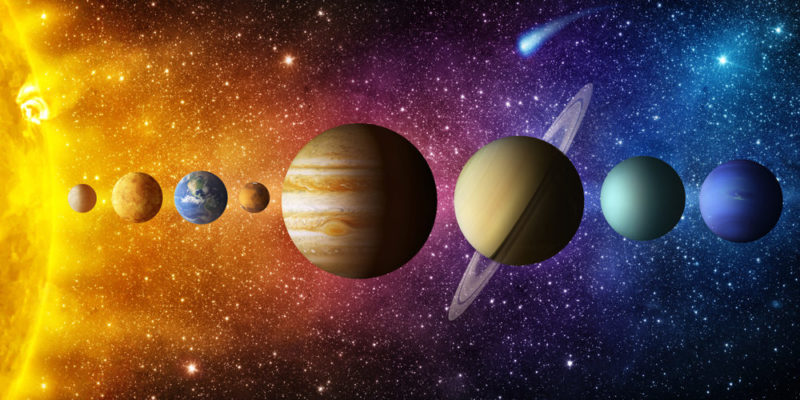

¿Qué es el sistema solar?
El sistema solar es el contexto planetario en donde se encuentra nuestro planeta Tierra: un circuito en donde ocho planetas orbitan constantemente a una única estrella, el Sol. Claro que el nuestro no es el único sistema planetario que existe. Existen sistemas de fuerzas dinámicas en torno a la gravedad de una o más estrellas a lo largo y ancho de la galaxia y del universo, así que es relativamente seguro asumir que existan incalculables sistemas semejantes.

Nuestro sistema solar forma parte de la Nube Interestelar Local, dentro de la Burbuja Local del brazo de Orión, ubicada a unos 28.000 años luz del centro brillante de nuestra galaxia, la Vía Láctea. Se calcula que se haya formado hace 4568 millones de años, como consecuencia del colapso de una nube molecular en, dando origen a un Disco circunestelar o protoplanetario, es decir, un conjunto desordenado de materia rodeando al Sol en forma de anillos. De allí se habrían constituido los distintos planetas y objetos astronómicos de nuestro vecindario espacial. Los objetos del Sistema solar, como en otros sistemas planetarios, se mantienen en una órbita elíptica alrededor del astro más grande y, por lo tanto, de mayor gravedad del sistema. En nuestro caso, claro, se trata del Sol, una estrella tipo-G de 1.392.000 kilómetros de diámetro total, que contiene el 99,86% de la masa total del Sistema Solar.
Los planetas del Sistema Solar y demás cuerpos celestes
El Sol ejerce atracción gravitatoria sobre los cuerpos celestes, que son los 8 planetas, los planetas enanos, los asteroides, los cometas, los satélites naturales como la Luna, las concentraciones de asteroides como el que divide a los planetas interiores de los exteriores y muchísimos objetos pequeños. Todo el sistema está contenido en la Vía Láctea, la galaxia con forma de espiral que a su vez forma parte del Universo.
En la antigüedad, las personas observaron con una mezcla de asombro, curiosidad e interés puntos luminosos que parecían moverse entre las estrellas. Eventualmente nombraron “planetas” a los puntos, que en el griego πλανῆται (planētai) significa “vagabundo”.
Los primeros 4 planetas son los denominados planetas interiores o planetas terrestres debido a su constitución sólida y rocosa: Mercurio, Venus, Tierra y Marte. Después de este, se encuentra el cinturón de asteroides tras el que se distribuyen los planetas jovianos o exteriores, constituidos por gas e identificados por su enorme volumen: Júpiter, Saturno, Urano y Neptuno.
LOS PLANETAS QUE CONFORMAN EL SISTEMA SOLAR
Mercurio Pocos saben que Mercurio es visible desde la Tierra sin binoculares, pero hay que saber en qué parte del día buscarlo. Es el segundo planeta más denso después de la Tierra y tan solo ligeramente más grande que nuestra Luna. ¿Hay calor en Mercurio? ¡Por supuesto! Pero también se caracteriza por sus temperaturas gélidas durante sus noches.